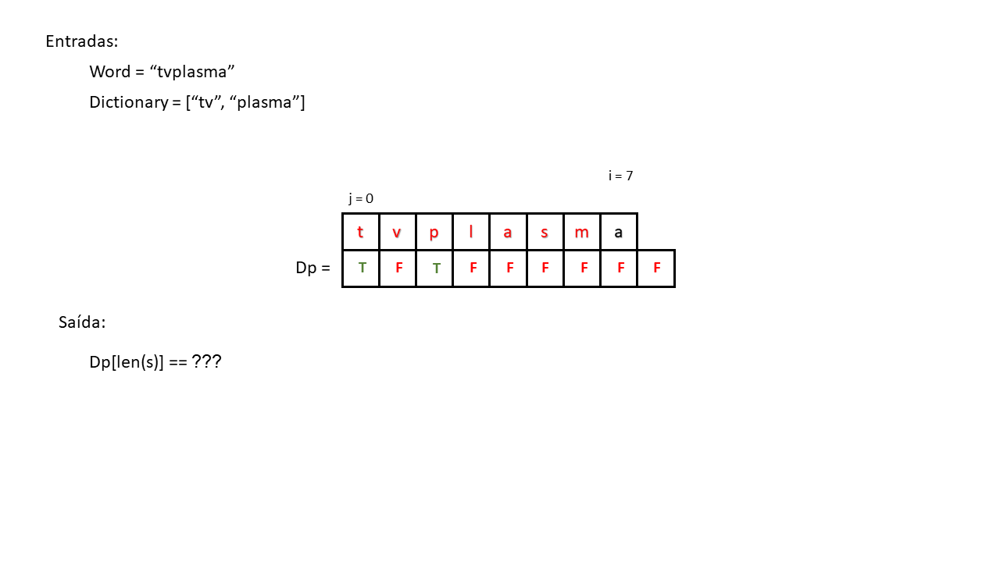
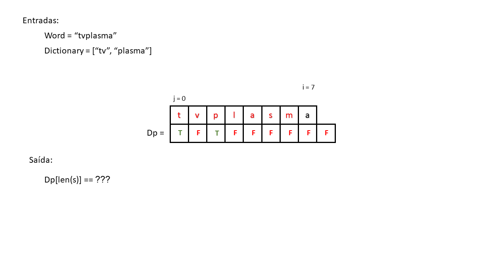
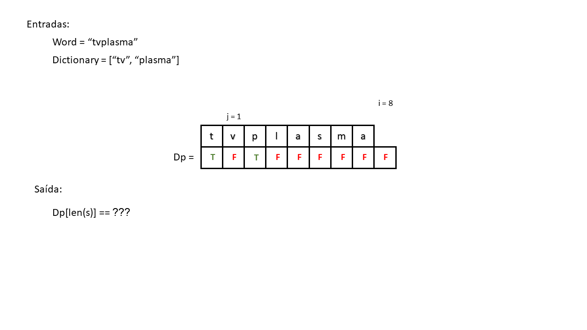
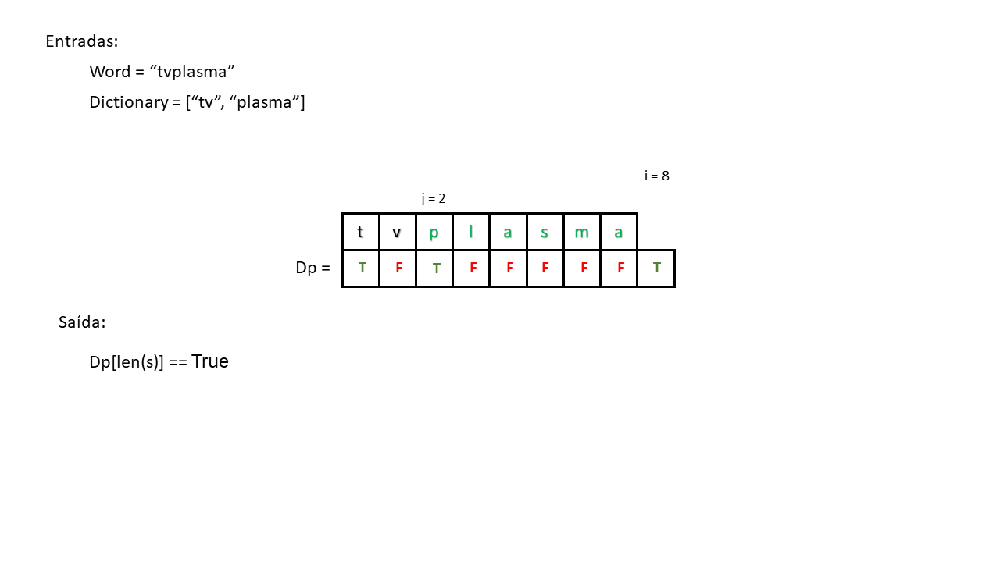
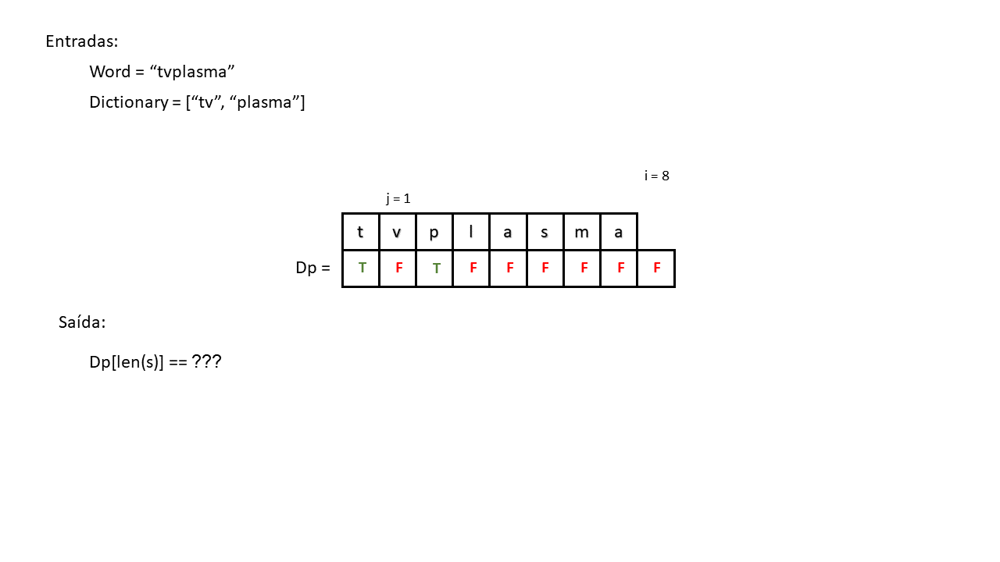
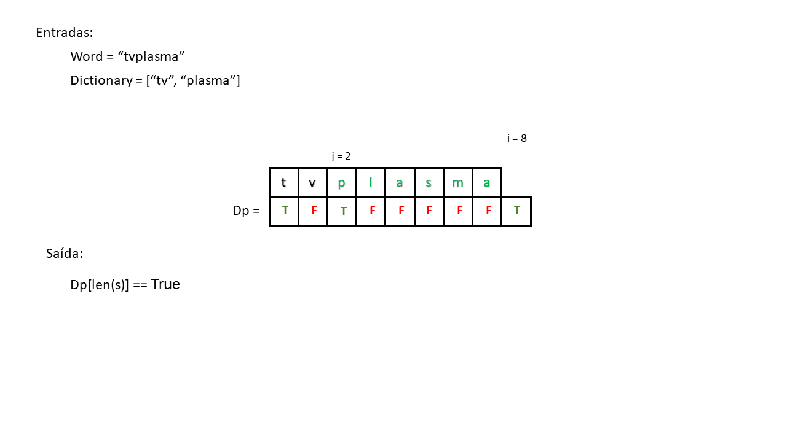

Handout criado por Pedro Andrade, Willian Kenzo e Thiago Kawahara
Algoritmo de Programação Dinâmica para o Problema da Quebra em Palavras
Problema
Qual a o problema?
O problema da quebra em palavras consiste em dado um conjunto de palavras sem espaço, descobrir se esse mesmo conjunto de palavras pode ser separado por espaços ou não.
Onde se encontra?
Esse problema se encontra em grandes mecanismos de busca como o Google, Bing, Amazon e em entrevistas de emprego para as grandes empresas de tecnologia, como o Google.
Qual a importância de solucionar esse problema?
Exercício 1
Entre no site da Amazon e busque por “tvplasma”. Depois entre no site das Americanas e faça a mesma busca. Há diferença entre as respostas?
Gabarito
No site da Amazon é devolvido os resultados para “tv plasma”, já no site das Americanas não é encontrado nenhum resultado.
Isso é um problema, visto que se você fosse comprar uma tv de plasma nas Americanas, e escrevesse “tvplasma” na ferramenta de busca, o site não te retornaria nenhum resultado. Dando a entender que as Americanas não vende tvs de plasma (o que não é verdade) e a empresa perderia a venda.
Implementação
O que é dado?
- Uma string (conjunto de palavras sem espaço).
- Uma lista de palavras existentes (banco de dados).
Aviso
A lista de palavras existentes seria como um dicionário. Não o dicionário que a gente conhece da programação, mas aquele gigante livro cheio de palavras.
O que fazer?
Fazer um algoritmo para descobrir se a string dada pode ser segmentada em espaços ou não.
O que retornar?
Um boolean:
-
Se a string pode ser segmentada em espaços, retorna True.
-
Se a string não pode ser segmentada em espaços, retorna False.
Aviso
Por simplicidade iremos retornar apenas um boolean, mas facilmente poderiamos alterar o código para retornar as possíveis segmentações da string em espaço.
Prática
Dado a seguinte lista de palavras:
[de, garrafa, agua, monitor, camisa, bordada]
E as seguintes strings:
"garrafadeagua"
"camisaxadrez"
"monitor"
"camisabordada"
Exercício 2
O que o algoritmo retornaria?
Gabarito
True False True True“garrafadeagua” retorna True, pois no banco de dados há “garrafa”, “de” e “agua”.
O mesmo para “monitor” e “camisabordada”.
“camisaxadrez” retorna False, pois no banco de dados não há a palavra “xadrez”, apesar de ter “camisa”.
Agora que já sabemos as entradas e as saídas do algoritmo, vamos ver como o começo chega no fim.
Para isso iremos utilizar um algoritmo, cuja ideia seja pegar uma parte da string, e checar se cada uma delas é uma palavra ou não. Quando se acha uma palavra, o algoritmo faz a mesma estratégia para o resto da string original. Seguindo a seguinte ideia:
Pegando a string “garrafadeagua”, o algoritmo faria até encontrar a primeira palavra:
1 "g"
2 "ga"
3 "gar"
4 "garr"
5 "garra"
6 "garraf"
7 "garrafa"
Como dito, a cada iteração o algoritmo checa se a substring é uma palavra do dicionário ou não. No caso, na iteração 7 o algoritmo encontra “garrafa” e agora irá checar o resto da string (“deagua”) para ver se forma uma palavra, da seguinte forma:
1 "d"
2 "de"
Exercício 3
Agora que o algoritmo achou mais uma palavra, como ficaria as iterações do resto da string para achar outra palavra?
Gabarito
Depois de encontrar “de”, o algoritmo começaria a checar o resto da substring por outra palavra.
1 "a" 2 "ag" 3 "agu" 4 "agua"Como chegamos no fim da string e o algoritmo achou a palavra “agua”. E como toda a string original pode ser dividida em “garrada”+“de”+“agua”, o algoritmo retorna True.
Exercício 4
Qual método que a gente aprendeu em Desafios de Programação que segue a lógica de iteração feita acima?
Gabarito
O método de recursão!
O algoritmo de recursão permite checarmos a string por uma palavra e quando a encontramos, recursamos para o resto da string, e acaba quando chega no seu fim.
Agora que já temos uma ideia do que o código irá fazer e qual algoritmo iremos usar, como o codificamos? Para um melhor entendimento vamos representá-los na forma escrita e dividí-los em partes.
Exercício 5
Primeiramente, como fariamos um código (pode ser um pseudocódigo, ou qualquer coisa) que faria isso:
Lembrando que já recebemos a string (“garrafadeagua”).
1 "g" 2 "ga" 3 "gar" 4 "garr" 5 "garra" 6 "garraf" 7 "garrafa"Gabarito
Nessa primeira interação utilizariamos um loop a qual irá pecorrer cada elemento da string sucessivamente, e um fatiamento para irmos aumentando a string analisada.
1 funcao word_break(string): 2 3 para cada posição da letra da string: 4 Print(string[0:posição])
Agora, para verificarmos se a substring é uma palavra, iremos adicionar na entrada da função um dicionário, que é um lista de palavras válidas, ou seja, um banco de dados. Além disso foi adicionado uma condição dentro do loop a qual só irá entrar caso a palavra exista dentro do banco de dados.
1 funcao word_break(string, dicionario):
2
3 para cada posição da letra da string:
4 caso string[0:posição] esteja no dicionário:
5 Print(string[0:posição])
Exercício 6
Agora a entrada da função word_break será “tvplasma” e o dicionário será [“tv”, “plasma”] o que seria printado na linha 5 em cada interação no loop?
Gabarito
1 "tv"Provavelmente você estranhou que o algorítimo não ter printado a palavra “plasma” nas suas interações. Reveja o código acima e tente entender a causa disso.
Exatamente! Por enquanto o código não está cortando as palavras existentes e por isso nunca pega a palavra plasma, mas palavras como “tvp”, “tvpl”, “tvpla” e assim por diante, que não existem no banco de dados.
Exercício 7
Agora que já conseguimos pegar partes da string original e identificar se essa parte é uma palavra válida, só resta checar o resto da string. Como fariamos isso?
Gabarito
Por recursão! E é com ele que iremos resolver o problema do exercício anterior, a quebra da string quando uma palavra já foi identificada no loop.
1 funcao word_break(string, dicionario): 2 3 4 para cada posição da letra da string: 5 caso string[0:posição] esteja no dicionário: 6 7 caso word_break(string[posição:], dicionario): # Verifica se o resto da string é segmentada de forma recursiva 9 devolve true 10 11 devolve falseAdicionamos a chamada recursiva dentro da primeira condição a qual já foi implementada antes, porém iremos mandar o resto da string que não foi verificada se existe no banco de dados ou não, e dentro dessa condição iremos devolver True, ou seja, a string pode ser repartida e caso o loop acabe será devolvido False, dessa forma declarando que a string não pode ser repartida.
Exercício 8
Faça uma breve simulação do código do exercício anterior com as entradas (“garrafadeagua”, [“garrafa”, “de”, “agua”]).
Qual o problema encontrado?
Dica: o que acontece depois de o algoritmo achar “agua”.
Gabarito
No final, quando o algoritmo acha a palavra “agua”, ainda é entrado na recursão da linha 7.
Como a gente está rodando um código recursivo, nós devemos por uma condição de parada se não ele rodará em um “loop infinito”. A condição seria quando o tamanho da string fosse 0, dessa forma devolvendo true.
1 funcao word_break(string, dicionario): 2 se string estiver vazia devolve true # Condição para retirar a recursão do "Loop infinito" 3 4 para cada posição da letra da string: 5 caso string[0:posição] esteja no dicionário: 6 7 caso word_break(string[posição:], dicionario): # Verifica se o resto da string é segmentada de forma recursiva 9 devolve true 10 11 devolve false
Exercício 9
Agora que já temos praticamente a ideia e o código entendidos.
Com a string de entrada “tvplasma” e o dicionário ["tv, “plasma”]. Você consegue explicar como esse algorítmo verificar se a string realmente consegue ser repartida ou não?
Gabarito
Quando o código entrar na primeira condição, ou seja quando ele afirmar que “tv” é uma palavra que exista no banco de dados, o resto da string, ou seja, “plasma”, que vem logo após “tv”, será enviado para a recursão da função verificando que “plasma” também existe no banco de dados devolvendo true.
Exercício 10
Imagine agora que as entradas das funções vão ser “garrafadeagua” e o dicionário seja [“garrafa”, “agua”] qual seria a saída? Ele faria alguma recursão?
Gabarito
1 FalseVocê poderia pensar que a string pode sim ser seguimentada em “garrafa de agua” e de fato você tem toda a razão, porém o banco de dados fornecido ao algoritmo não possui a palavra “de”, dessa forma ela não consegue seguimentá-la, entretanto a função acaba encontrando uma palavra: “garrafa”, fazendo uma recursão.
Logo em seguida iremos por o código implementado no python para uma melhor compreensão.
1 def word_break(string, dicionario):
2 tamanho = len(string)
2 if tamanho == 0:
3 return True
4
5 for i in range(1, tamanho+1):
6 if string[0: i] in dicionario and word_break(string[i: tamanho], dicionario):
7 return True
8
9 return False
Exercício 11
Você saberia dizer qual é a complexidade do algoritmo de recursão?
Gabarito
\(O(2^n)\)
Programação Dinâmica
O que é? É um método de otimização de algoritmos que é uma espécie de um algoritmo de recursão com o apoio de uma tabela. Ou seja, a programação dinâmica, guarda os resultados dos subproblemas encontrados durante a recursão, para não ser preciso calcular novamente.
Como isso se aplica ao nosso problema O problema do algoritmo recursivo é a sua complexidade. Podemos suavizá-la implementando a programação dinâmica, já que, por salvar os resultados dos subproblemas, ele não precisa calcular novamente, o que acaba tornando-o mais rápido.
Agora para entendermos melhor a lógica da programação dinâmica, realizaremos ela passo a passo no código.
Para começar precisamos iniciar uma lista que possua o tamanho da string + 1 e todos os seus elementos iram apresentar o valor False, menos o seu primeiro valor.
Nós utilizamos essa lista para que o programa consiga identificar as palavras que já foram segmentadas antes (fará mais sentido mais a frente), o primeiro elemento dessa lista vai começar como True, pois uma string vazia sempre vai poder ser segmentada.
1 funcao word_break(string):
2 cria uma lista dp do tamanho da string + 1 preenchida com false menos o primeiro elemento
3 # O primeiro elemento de dp é true pois uma string vazia sempre pode ser segmentada.
O segundo passo é adicionar um loop e ele irá pecorrer cada letra da string
1 funcao word_break(string):
2 cria uma lista dp do tamanho da string + 1 preenchida com false menos o primeiro elemento
3 # O primeiro elemento de dp é true pois uma string vazia sempre pode ser segmentada.
4
5 para todo i no tamanho da string + 1:
6 Print(string[i])
Na terceira parte iremos adicionar uma nova entrada para a função, o dicionário, para servir como condição. Sendo assim, adicionaremos um loop interno que irá perorrer cada substring em relação ao i do loop externo checando se a substring formada que comece em j e vai até i pertence ao dicionário ou não.
1 funcao word_break(string, dicionario):
2 cria uma lista dp do tamanho da string + 1 preenchida com false menos o primeiro elemento
3 # O primeiro elemento de dp é true pois uma string vazia sempre pode ser segmentada.
4
5 para todo i no tamanho da string + 1:
6 para todo j em i:
7 se string[j:i] pertece ao dicionario:
8 Print(string[j:i])
Exercício 12
Dado a seguinte lista de palavras e a string “tvplasma4kz” qual seria a saída do código?
tv,plasma, 4k, led, lcd, oled, brasilGabarito
1 "tv" 2 "plasma" 3 "4k"
Como pode ser visto acima, o algorítimo já está conseguindo quebrar a string e verificar se existe ou não no dicionário, porém ele ainda não consegue identificar se a string realmente pode ser seguimentada ou não.
Para que ele consiga fazer essa proeza nós finalmente vamos utilizar a lista inicializada anteriormente. Primeiro vamos por uma condição adjunto com o outro, que só irá entrar nessa condição caso o valor da lista dp na posição j (do loop interno) for True, caso ele consiga ter as duas condições realizadas, vamos por verdadeira na lista a condição True na posição i e depois do loop iremos devolver o último elemento da lista.
Nós fazemos todas essas condições pois na lista dp ela irá marcar como True o início e o fim de uma palavra válida então caso a string consiga ser sedimentada ela sempre irá apresentar true no último elemento, pois será a marcação do fim da última string encontrada e caso não encontre tal palavra o último elemento será False.
1 funcao word_break(string, dicionario):
2 cria uma lista dp do tamanho da string + 1 preenchida com false menos o primeiro elemento
3 # O primeiro elemento de dp é true pois uma string vazia sempre pode ser segmentada.
4
5 para todo i no tamanho da string + 1:
6 para todo j em i:
7 se dp[j] e string[j:i] pertece ao dicionario:
8 dp[i] recebe true
9 quebra o loop interno
10
11 devolve o último elemento da lista dp
Exercício 13
Agora para essa função com a entrada de “tvplasma” e o dicionário [“tv”, “plasma”] qual seria a saída ?
Gabarito
1 True
Segue o código em python para que seja mais fácil a compreensão
def wordBreak(string, dictionary):
# create a dp table to store results of subproblems
# value of dp[i] will be true if string string can be segmented
# into dictionary words from 0 to i.
dp = [False for i in range(len(string) + 1)]
# dp[0] is true because an empty string can always be segmented.
dp[0] = True
for i in range(len(string) + 1):
for j in range(i):
if dp[j] and string[j:i] in dictionary:
dp[i] = True
break
return dp[len(string)]
A seguir temos uma breve animação do algoritmo para um maior entendimento:
 
 

Exercício 14
Você saberia dizer qual é a complexidade do algoritmo de programação dinâmica?
Gabarito
\(O(n^2)\)